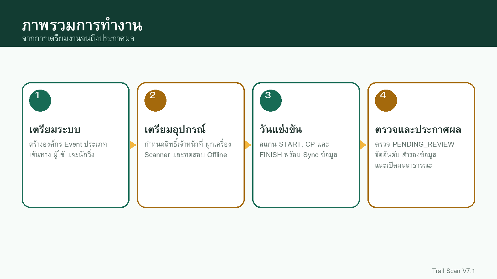
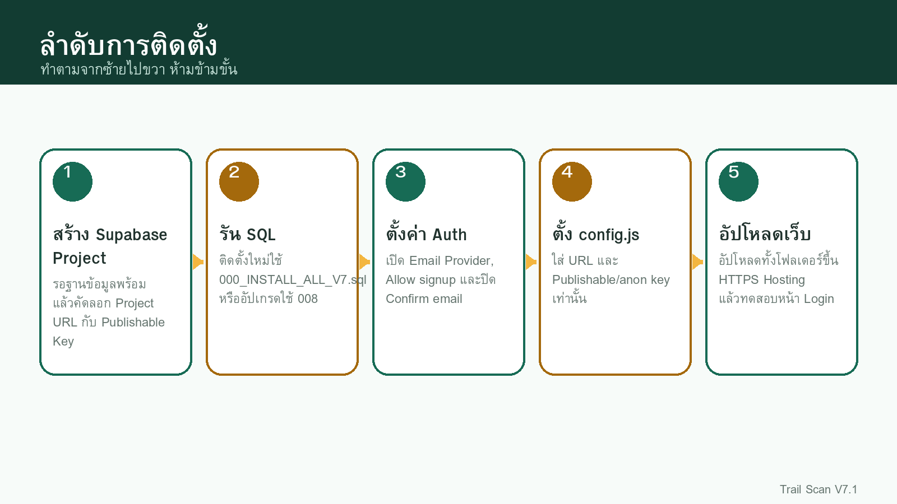
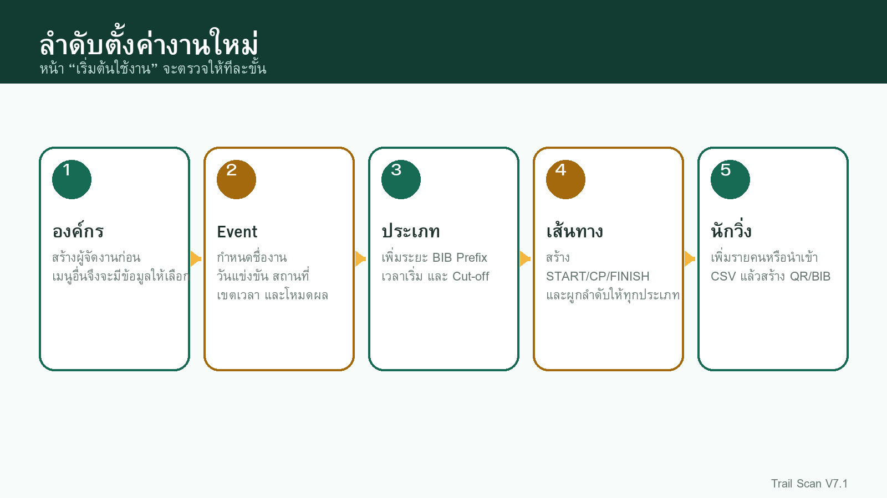
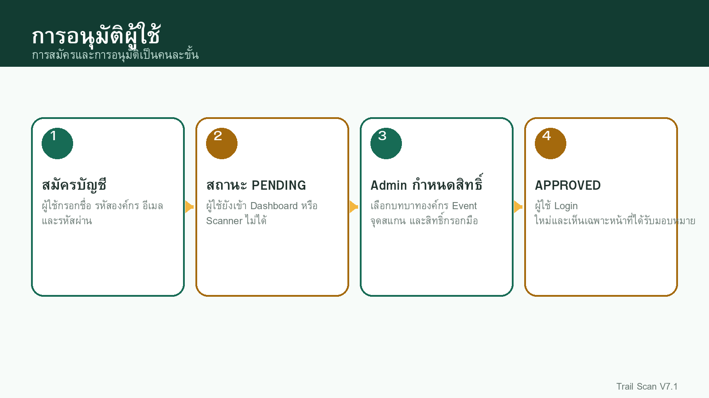
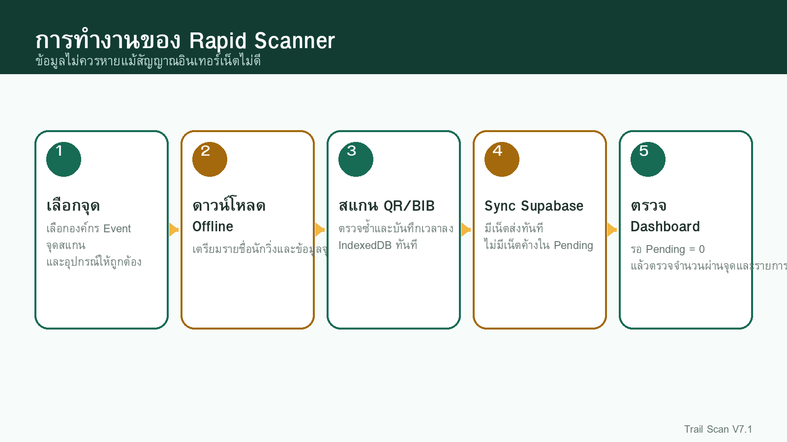
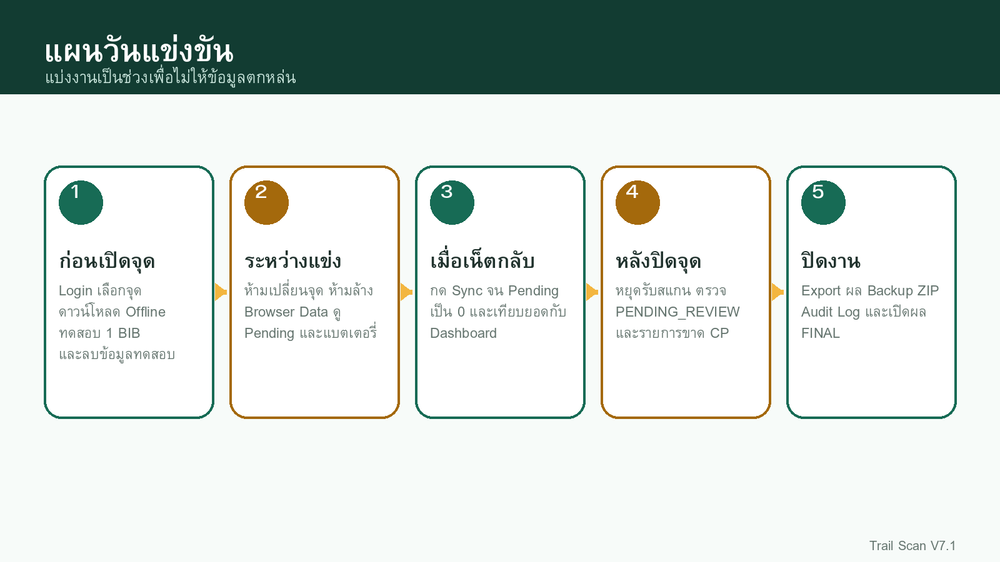
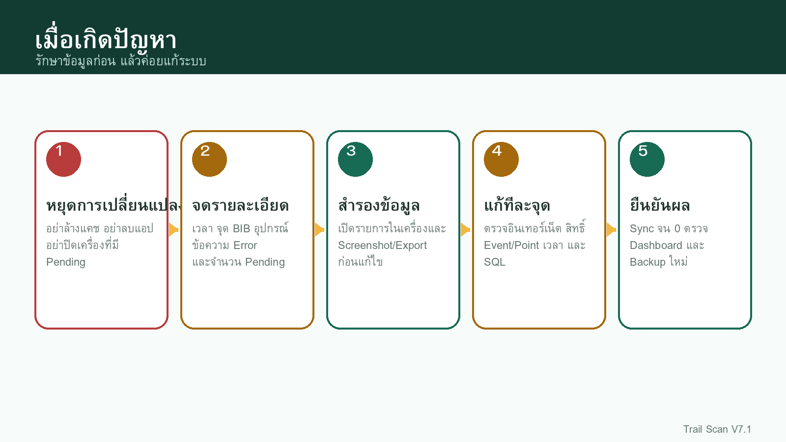

วิธีใช้คู่มือฉบับนี้
เริ่มจากตรงไหน ผู้ติดตั้งใหม่ให้อ่านบทที่ 1-7 ตามลำดับ ผู้จัดงานที่ติดตั้งแล้วเริ่มที่บทที่ 8 เจ้าหน้าที่ Scanner เริ่มที่บทที่ 16 และ 17
คู่มือนี้เขียนโดยสมมติว่าผู้อ่านอาจไม่เคยใช้ Supabase หรือแก้ไฟล์เว็บไซต์มาก่อน ทุกขั้นจึงระบุชื่อเมนู ไฟล์ ปุ่ม และผลที่ควรเห็นหลังทำสำเร็จ
| คุณเป็นใคร | ให้อ่านบท |
|---|
| เจ้าของระบบ/ผู้ติดตั้ง | 1-7, 22-24 |
| ผู้จัดงาน/ผู้ดูแลองค์กร | 8-15, 18-21 |
| เจ้าหน้าที่ START/CP/FINISH | 16-17, 20 |
| ผู้ดูแลผล | 15, 18-21 |
| นักวิ่ง | หน้า results.html และบท 19 |
สัญลักษณ์ในคู่มือ
| คำ | ความหมาย |
|---|
| สำคัญ | ต้องทำให้ถูกก่อนขั้นถัดไป |
| คำเตือน | ทำผิดอาจทำให้ Login ไม่ได้ ข้อมูลหาย หรือผลผิด |
| ผลที่ควรเห็น | ใช้ตรวจว่าขั้นตอนสำเร็จ |
| ทางแก้ | ทำเมื่อผลที่เห็นไม่ตรงกับคู่มือ |
วิธีทำงานที่ปลอดภัย
- สำรองเว็บไซต์และฐานข้อมูลก่อนอัปเกรด
- ทดลองด้วย Event ทดสอบก่อนใช้กับงานจริง
- ใช้บัญชีแยกตามหน้าที่ ไม่แชร์บัญชี Admin
- ก่อนล้างแคชหรือ Browser Data ต้องตรวจ Pending Offline = 0
- หลังเปลี่ยน SQL หรือไฟล์เว็บ ให้ Logout/Login และ Refresh แบบไม่ใช้ Cache

แผนภาพการทำงานตั้งแต่เตรียมระบบจนประกาศผล1. Trail Scan V7.1 คืออะไร
Trail Scan เป็นระบบจัดการงานวิ่งและบันทึกเวลาผ่านจุดด้วย QR โดยหน้าเว็บเชื่อม Supabase โดยตรง ใช้ได้กับ START, Checkpoint (CP), FINISH และงานที่มีหลายระยะหรือหลายเส้นทาง
1.1 สิ่งที่ระบบทำได้
- สร้างองค์กรและ Event ได้หลายงาน
- เพิ่มประเภทการแข่งขันและกำหนดเวลาเริ่มจริงหรือ Cut-off
- สร้าง START, CP และ FINISH ได้ไม่จำกัด พร้อมผูกเส้นทางแยกตามประเภท
- เพิ่มนักวิ่งรายคนหรือนำเข้า CSV สร้าง QR และป้าย BIB PDF
- กำหนดสิทธิ์ผู้ใช้ตามองค์กร Event และจุดสแกน
- สแกน QR หรือกรอก BIB ด้วยมือ พร้อม Offline Queue และ Sync
- ดู Dashboard เวลา จุดล่าสุด สถานะ และอันดับ
- ให้นักวิ่งค้นหาผลด้วย Event และ BIB
- ตรวจความพร้อมก่อนวันแข่งขัน
- เก็บ Audit Log และสำรอง Event เป็น ZIP/CSV
1.2 คำศัพท์สำคัญ
| คำ | อธิบายแบบง่าย |
|---|
| องค์กร | ผู้จัดงานหรือเจ้าของระบบ เช่น บริษัท ชมรม หรือทีมงาน |
| Event | งานแข่งขันหนึ่งงาน เช่น Phuket Trail 2026 |
| ประเภทการแข่งขัน | ระยะหรือกลุ่ม เช่น 10K, 25K, 50K |
| Scan Point | จุดที่เจ้าหน้าที่สแกน เช่น START, CP1, FINISH |
| Route | ลำดับจุดที่นักวิ่งประเภทนั้นต้องผ่าน |
| BIB | หมายเลขนักวิ่งที่ใช้ค้นหาและกรอกมือ |
| QR Token | รหัสเฉพาะใน QR ของนักวิ่ง |
| PENDING_REVIEW | บันทึกแล้วแต่มีคำเตือน ต้องให้ Admin ตรวจ |
| Offline Queue | รายการสแกนที่เก็บในโทรศัพท์และยังไม่ได้ส่ง Supabase |
| RLS | กฎฐานข้อมูลที่จำกัดว่าแต่ละบัญชีเห็นหรือแก้อะไรได้ |
1.3 โครงสร้างหน้าหลัก
| เมนู | หน้าที่ |
|---|
| เริ่มต้นใช้งาน | ตรวจว่าตั้งค่าองค์กร Event ประเภท จุด และนักวิ่งครบหรือยัง |
| ภาพรวม | ติดตามยอดผ่านจุด รายชื่อนักวิ่ง เวลา และอันดับ |
| ตรวจความพร้อม | แยกรายการบล็อก คำเตือน และสิ่งที่พร้อมแล้ว |
| ผู้ใช้งานและสิทธิ์ | อนุมัติบัญชีและกำหนดขอบเขตการทำงาน |
| Start / CP / Finish | สร้างจุดและผูกเส้นทาง |
| Rapid Scanner | สแกน QR/BIB ที่หน้างาน |
| ประวัติการทำงาน | ดูว่าใครสร้าง แก้ หรือลบอะไร |
| สำรองและส่งออก | ดาวน์โหลด Backup ZIP และ CSV |
2. เตรียมของก่อนติดตั้ง
2.1 สิ่งที่ต้องมี
- บัญชี Supabase และสิทธิ์สร้าง Project
- พื้นที่ Hosting ที่เปิดผ่าน HTTPS
- โปรแกรมแตก ZIP เช่น Finder/Windows Explorer
- โปรแกรมแก้ข้อความธรรมดา เช่น VS Code, Notepad หรือ TextEdit แบบ Plain Text
- อีเมลสำหรับบัญชี Admin คนแรก
- คอมพิวเตอร์สำหรับติดตั้ง และโทรศัพท์สำหรับทดสอบ Scanner
2.2 โฟลเดอร์สำคัญใน ZIP
| ตำแหน่ง | ห้ามทำอะไร/ใช้ทำอะไร |
|---|
| assets/config.js | ใส่ Project URL และ Publishable/anon key ของคุณ |
| supabase/000_INSTALL_ALL_V7.sql | ติดตั้งฐานข้อมูลใหม่ |
| supabase/008_upgrade_v6_to_v7.sql | อัปเกรดจาก V6 เป็น V7 |
| admin/index.html | หน้า Admin |
| scanner/index.html | หน้า Rapid Scanner |
| manual/ | คู่มือออนไลน์ PDF และ Word |
| sw.js | Service Worker สำหรับ PWA/Cache |
ห้ามใส่ในเว็บไซต์ ห้ามใส่ Secret key, service_role key, Database password, Telegram token หรือรหัสผ่าน Admin ใน config.js เพราะผู้เปิดเว็บสามารถเห็นไฟล์นี้ได้
2.3 เลือกวิธีติดตั้ง
| สถานการณ์ | ไฟล์ SQL |
|---|
| ยังไม่เคยติดตั้ง Trail Scan | 000_INSTALL_ALL_V7.sql |
| ใช้ V6 อยู่และมีข้อมูลจริง | 008_upgrade_v6_to_v7.sql |
| ไม่แน่ใจ | หยุดก่อน สำรองฐานข้อมูล แล้วตรวจ VERSION.txt ของเว็บเดิม |

ลำดับการติดตั้งที่ปลอดภัย3. สร้างและเตรียม Supabase Project
3.1 สร้าง Project ใหม่
- เข้าสู่ Supabase Dashboard
- กด New project
- เลือก Organization ของคุณ
- ตั้ง Project name ที่จำได้ เช่น trail-scan-production
- ตั้ง Database password ที่ยาวและเก็บไว้ใน Password Manager
- เลือก Region ที่ใกล้ผู้ใช้งาน เช่น Singapore หากผู้ใช้หลักอยู่ประเทศไทย
- กด Create new project และรอจนสถานะพร้อมใช้งาน
อย่าลืมรหัสฐานข้อมูล Database password ไม่ต้องใส่ในเว็บไซต์ แต่ต้องเก็บไว้สำหรับงานดูแลฐานข้อมูลในอนาคต
3.2 คัดลอก Project URL และ Key
- เปิด Project ที่สร้างแล้ว
- เปิด Settings → API Keys หรือกด Connect
- คัดลอก Project URL ซึ่งมีรูปแบบ https://PROJECT-ID.supabase.co
- คัดลอก Publishable key ที่ขึ้นต้น sb_publishable_ หาก Project มีคีย์แบบใหม่
- หาก Project เก่า ใช้ legacy anon key ได้ แต่ห้ามใช้ service_role
ชื่อช่องใน config.js แม้ตัวแปรชื่อ SUPABASE_ANON_KEY คุณสามารถวาง Publishable key หรือ legacy anon key ได้ ระบบใช้เป็นคีย์ฝั่ง Browser
3.3 ตรวจ Project ก่อนรัน SQL
- Project เปิดได้โดยไม่มีสถานะ Paused
- เข้า SQL Editor ได้
- คัดลอก URL และ Key เก็บในไฟล์ชั่วคราว
- เลือก Project ถูกตัว ไม่ใช่ Project ทดสอบอื่น
เอกสาร Supabase: API keys
4. ติดตั้งฐานข้อมูลด้วย SQL
4.1 ติดตั้งใหม่
- เปิด Supabase → SQL Editor
- กด New query
- เปิดไฟล์ supabase/000_INSTALL_ALL_V7.sql ด้วยโปรแกรมอ่านข้อความ
- กด Select All แล้ว Copy เนื้อหาทั้งหมด
- วางลง SQL Editor
- ตรวจว่าบรรทัดแรกเป็นคำอธิบาย Trail Scan และไม่ได้วางซ้ำสองรอบ
- กด Run
- รอจนขึ้น Success และดูตารางผลตรวจสอบช่วงท้าย
ต้องรันทั้งไฟล์ อย่าแบ่งรันทีละบางส่วน เพราะตาราง ฟังก์ชัน Trigger และ RLS พึ่งพากัน
4.2 อัปเกรดจาก V6
- ดาวน์โหลด Backup ZIP ของ Event สำคัญจากเว็บเดิม
- เก็บสำเนาไฟล์เว็บไซต์เดิมทั้งโฟลเดอร์
- เปิด SQL Editor ใน Project เดิม
- รัน supabase/008_upgrade_v6_to_v7.sql หนึ่งครั้ง
- ตรวจว่ามี Trigger audit_direct_change ตามผลลัพธ์ท้าย SQL
- จึงค่อยอัปโหลดไฟล์เว็บไซต์ V7.1 ทับของเดิม
4.3 ผลที่ควรเห็น
- มีตาราง organizations, events, race_categories, scan_points, runners, scan_logs, race_results และ audit_logs
- มีฟังก์ชัน RPC เช่น get_my_access_context, submit_scan, public_runner_result
- RLS เปิดบนตารางใน public schema
- ไม่มี Error สีแดงใน SQL Editor
4.4 เมื่อ SQL ขึ้น Error
| ข้อความโดยย่อ | ทางแก้ |
|---|
| already exists | อาจรันไฟล์ติดตั้งใหม่ซ้ำ ให้ใช้ไฟล์ Upgrade หรือสำรองแล้วเริ่ม Project ใหม่ |
| permission denied | ตรวจว่าเปิด SQL Editor ของ Project ที่เป็นเจ้าของ |
| relation ... does not exist | อาจรันไฟล์ Upgrade โดยยังไม่เคยติดตั้ง Core Schema |
| function ... does not exist | SQL ก่อนหน้ารันไม่ครบ ให้เริ่มจากไฟล์ติดตั้งรวม |
| statement timeout | รอแล้วลองใหม่ หากมีข้อมูลมากให้รันช่วงเวลาที่ไม่มีผู้ใช้ |
5. ตั้งค่า Authentication ให้สมัครโดยไม่ยืนยันอีเมล
Trail Scan ใช้การอนุมัติจาก Admin ของระบบเอง ผู้สมัครจึงไม่จำเป็นต้องกดลิงก์ยืนยันอีเมล แต่ยังเข้าใช้งานไม่ได้จนกว่า Admin จะกำหนดสิทธิ์
5.1 ค่าที่ต้องตั้ง
- เปิด Supabase Dashboard → Authentication
- เปิด Sign In / Providers
- เลือก Email
- เปิด Enable Email Provider
- เปิด Allow new users to sign up
- ปิด Confirm email
- กด Save หากหน้าจอมีปุ่มบันทึก
บัญชีเก่าอาจยังไม่ Confirm การปิด Confirm email ไม่ได้แก้บัญชีที่สมัครตอนเปิด Confirm email เสมอไป สำหรับบัญชีทดสอบให้ลบแล้วสมัครใหม่หลังปิดค่า
5.2 ผลที่ถูกต้องหลังสมัคร
| ตำแหน่ง | สิ่งที่ควรเห็น |
|---|
| Authentication → Users | มีอีเมลผู้สมัคร |
| public.profiles | approval_status = PENDING และ is_active = false |
| หน้าเว็บ | พาไปหน้ารออนุมัติ ไม่ขึ้น Email not confirmed |
| Dashboard/Admin | ยังเข้าไม่ได้จนกว่าจะได้รับ APPROVED |
5.3 เหตุผลที่มี 2 สถานะ
| สถานะ | ความหมาย |
|---|
| Email confirmed | Supabase อนุญาตให้ Login |
| Admin approved | Trail Scan อนุญาตให้เห็นเมนูและข้อมูลตามหน้าที่ |
เอกสาร Supabase: General Auth Configuration
เอกสาร Supabase: JavaScript signUp
6. ตั้งค่า assets/config.js
6.1 เปิดไฟล์อย่างไร
- แตก ZIP Trail Scan ลงโฟลเดอร์ใหม่
- เข้าโฟลเดอร์ assets
- คลิกขวา config.js แล้วเปิดด้วย VS Code, Notepad หรือ TextEdit แบบ Plain Text
- อย่าเปิดด้วย Microsoft Word เพราะอาจเพิ่มอักขระที่ทำให้ JavaScript เสีย
6.2 ตัวอย่างค่าที่ถูกต้อง
window.TRAIL_SCAN_CONFIG = Object.freeze({
APP_NAME: 'Trail Scan',
SUPABASE_URL: 'https://PROJECT-ID.supabase.co',
SUPABASE_ANON_KEY: 'sb_publishable_xxxxxxxxxxxxx',
DEFAULT_TIMEZONE: 'Asia/Bangkok',
SCANNER: {
FPS: 18,
DUPLICATE_LOCK_MS: 4000,
RESULT_MS: 1200,
BATCH_SIZE: 30
}
});6.3 จุดที่ห้ามแก้โดยไม่จำเป็น
- อย่าลบเครื่องหมายคำพูดเดี่ยวรอบ URL และ Key
- อย่าลบเครื่องหมาย comma ระหว่างบรรทัด
- อย่าเปลี่ยนชื่อ window.TRAIL_SCAN_CONFIG
- อย่าใส่ service_role หรือ Secret key
- อย่าเผยแพร่ไฟล์ที่มี Key ของ Project อื่น
6.4 ตรวจไฟล์หลังอัปโหลด
- เปิด URL เว็บไซต์ตามด้วย /assets/config.js
- ตรวจว่า Browser แสดงค่าของ Project จริง
- ตรวจว่า URL ไม่ขึ้น 404
- กลับหน้า Login แล้วเปิด Developer Console ดูว่าไม่มีข้อความ SUPABASE_URL หรือ SUPABASE_ANON_KEY ว่าง
7. อัปโหลดเว็บไซต์ขึ้น Hosting
7.1 โครงสร้างที่ต้องรักษา
เว็บไซต์/
├── index.html
├── login.html
├── pending.html
├── results.html
├── admin/index.html
├── scanner/index.html
├── assets/
│ ├── config.js
│ ├── css/app.css
│ └── js/*.js
├── manual/
│ ├── index.html
│ ├── Trail_Scan_V7_1_User_Manual.pdf
│ └── Trail_Scan_V7_1_User_Manual.docx
├── supabase/*.sql
├── manifest.webmanifest
└── sw.js
7.2 อัปโหลดด้วย File Manager/cPanel
- เปิด File Manager ของ Hosting
- เข้าโฟลเดอร์เว็บไซต์ เช่น public_html หรือโฟลเดอร์ Subdomain
- อัปโหลด ZIP แล้ว Extract หรืออัปโหลดไฟล์ทั้งหมด
- ตรวจว่า index.html อยู่ที่รากเว็บไซต์ ไม่ซ้อนอยู่ในโฟลเดอร์อีกชั้นโดยไม่ตั้งใจ
- เปิด https://โดเมนของคุณ/login.html
- กดปุ่มคู่มือและตรวจว่า PDF ดาวน์โหลดได้
7.3 อัปเกรดเว็บเดิม
- สำรองไฟล์ assets/config.js ของเว็บจริง
- สำรองเว็บเดิมทั้งโฟลเดอร์
- อัปโหลด V7.1 ทับไฟล์เดิม
- นำ config.js เดิมกลับมาใช้ หากไฟล์ใหม่ไม่มีค่าของ Project จริง
- ลบไฟล์คู่มือ V6 เก่าที่ไม่ใช้
- โหลดเว็บแบบไม่ใช้ Cache: Mac กด Command+Shift+R, Windows กด Ctrl+Shift+R
- หากยังเห็นหน้าเก่า ให้ล้าง Site Data/Service Worker หนึ่งครั้ง
ต้องใช้ HTTPS กล้องโทรศัพท์และ Service Worker ต้องการ HTTPS บน Hosting จริง ยกเว้น localhost สำหรับการพัฒนาเท่านั้น
8. สร้าง Admin คนแรก
8.1 สมัครบัญชีแรก
- เปิด login.html
- เปิดหัวข้อ สมัครใช้งาน
- กรอกชื่อ อีเมล และรหัสผ่านอย่างน้อย 6 ตัว
- รหัสองค์กรยังเว้นว่างได้ เพราะยังไม่ได้สร้างองค์กร
- กดสมัคร
- หน้าเว็บควรพาไป pending.html
8.2 ตั้งเป็นผู้ดูแลระบบคนแรก
- ที่หน้ารออนุมัติ มองหาปุ่ม ตั้งเป็นผู้ดูแลระบบคนแรก
- กดปุ่มหนึ่งครั้ง
- รอข้อความสำเร็จ
- กดตรวจสอบสถานะอีกครั้ง
- ระบบควรพาไปหน้า Admin
ปุ่มไม่แสดง ปุ่มนี้แสดงเฉพาะเมื่อระบบยังไม่มี SUPER_ADMIN หากมี Admin อยู่แล้ว ต้องให้ Admin เดิมอนุมัติ หรือใช้ SET_FIRST_ADMIN_BY_EMAIL.sql ตามคู่มือแก้ปัญหา
8.3 ตรวจบัญชี Admin
- ชื่อและอีเมลแสดงมุมขวาบน
- เห็นเมนูองค์กรและผู้ใช้งานและสิทธิ์
- เข้าเมนูเริ่มต้นใช้งานได้
- ยังเห็นข้อความว่าต้องสร้างองค์กร ซึ่งเป็นปกติ
9. สร้างองค์กรและใช้หน้าเริ่มต้นใช้งาน
องค์กรเป็นข้อมูลตั้งต้นที่เมนูอื่นใช้กรองข้อมูล หากยังไม่มีองค์กร รายชื่อผู้ใช้ Event และหน้าต่าง ๆ จะไม่แสดงข้อมูล
9.1 สร้างองค์กร
- เปิดเมนู องค์กร
- กด + สร้างองค์กร
- กรอกชื่อ เช่น Keita Trail Timing
- กรอก Slug เป็นภาษาอังกฤษตัวเล็กและขีดกลาง เช่น keita-trail
- ตั้งเขตเวลา Asia/Bangkok
- สถานะเลือก ACTIVE
- กดบันทึก
Slug ใช้เป็นรหัสองค์กร แจ้ง Slug ให้ผู้สมัครกรอก เช่น keita-trail ไม่ควรเปลี่ยนบ่อยหลังเริ่มใช้งาน
9.2 หน้าเริ่มต้นใช้งาน
หลังสร้างองค์กร ระบบจะเลือกให้อัตโนมัติและแสดงเปอร์เซ็นต์ความพร้อมพื้นฐาน พร้อมปุ่มไปแก้แต่ละขั้น

ลำดับตั้งค่างานใหม่ในหน้าเริ่มต้นใช้งาน9.3 สร้าง Event จาก Template
- เปิดเมนู เริ่มต้นใช้งาน
- กด สร้างงานจาก Template
- เลือกองค์กร
- เลือกรูปแบบ: วิ่งเทรล, วิ่งถนน, หลายระยะ หรือวิ่งวนรอบ
- กรอกชื่อ Event วัน เวลาเริ่ม และสถานที่
- ตรวจตัวอย่างประเภทและจุดที่ระบบจะสร้าง
- กดสร้าง Event และโครงสร้างพื้นฐาน
- เปิดเมนูประเภทและจุดสแกนเพื่อตรวจและแก้ให้ตรงงานจริง
Template เป็นจุดเริ่มต้น อย่าใช้ค่าระยะและ CP จาก Template โดยไม่ตรวจ งานจริงแต่ละงานมีเส้นทางและ Cut-off ต่างกัน
10. สมัครผู้ใช้ อนุมัติ และกำหนดสิทธิ์

ขั้นตอนจากสมัครจนเข้าใช้งานได้10.1 ขั้นตอนของผู้สมัคร
- เปิด login.html
- กรอกชื่อที่แสดง
- กรอก Slug องค์กร เช่น keita-trail
- กรอกอีเมลและรหัสผ่าน
- กดสมัครและรอ Admin อนุมัติ
- ส่งชื่อหรืออีเมลให้ Admin
10.2 ขั้นตอนของ Admin
- เปิดเมนูผู้ใช้งานและสิทธิ์
- เลือกองค์กรให้ถูกต้อง
- กดโหลดรายการใหม่
- เลือกผู้ใช้สถานะ PENDING
- กดกำหนดสิทธิ์
- เลือกบทบาทองค์กร
- เลือก Event ที่รับผิดชอบ หากบทบาทไม่ได้เห็นทุก Event
- เลือกจุดสแกนและ Scan Role
- กำหนดกรอก BIB ด้วยมือหรือ Override คำเตือนตามความจำเป็น
- กดอนุมัติและบันทึกสิทธิ์
- ให้ผู้ใช้ Logout/Login หรือกดตรวจสถานะอีกครั้ง
10.3 บทบาทองค์กร
| บทบาท | เหมาะกับ | สิทธิ์โดยสรุป |
|---|
| SUPER_ADMIN | เจ้าของระบบ | เห็นทุกองค์กรและทุกเมนู |
| OWNER | เจ้าขององค์กร | จัดการทั้งองค์กรและผู้ใช้ |
| ORG_ADMIN | ผู้ดูแลองค์กร | จัดการ Event/ข้อมูลในองค์กร |
| EVENT_ADMIN | ผู้จัดการงาน | ดูแล Event ที่ได้รับมอบหมาย |
| RACE_DIRECTOR | ผู้อำนวยการการแข่งขัน | ดู Dashboard จุดและการดำเนินงาน |
| RESULT_ADMIN | ผู้ดูแลผล | ตรวจผลและรายการผิดปกติ |
| VIEWER | ผู้สังเกตการณ์ | ดูข้อมูลอย่างเดียว |
| STAFF | เจ้าหน้าที่ Scanner | ใช้เฉพาะจุดและ Event ที่มอบหมาย |
10.4 Scan Role
| Scan Role | ใช้ที่ |
|---|
| SCAN_SUPERVISOR | หัวหน้าทีมสแกน ดูหลายจุดตามที่มอบหมาย |
| START_STAFF | จุด START |
| CP_STAFF | Checkpoint |
| FINISH_STAFF | จุด FINISH |
| SCAN_VIEWER | ดูข้อมูลจุดแต่ไม่บันทึกใหม่ |
ให้สิทธิ์เท่าที่จำเป็น อย่าให้ Override หรือ OWNER แก่เจ้าหน้าที่ทั่วไป เพราะสามารถยืนยันคำเตือนหรือจัดการข้อมูลสำคัญได้
11. ตั้งค่า Event
11.1 ช่องสำคัญ
| ช่อง | วิธีกรอก |
|---|
| ชื่อ Event | ชื่อที่แสดงต่อ Admin และหน้าผลสาธารณะ |
| Slug | ภาษาอังกฤษตัวเล็ก ใช้แยกงาน |
| รหัสงาน | รหัสสั้น เช่น PTC26 |
| วันแข่งขัน | วันที่จริงของงาน |
| เขตเวลา | ประเทศไทยใช้ Asia/Bangkok |
| สถานที่ | ชื่อพื้นที่จัดงาน |
| สถานะ | DRAFT, SETUP, ACTIVE, FINISHED หรือ ARCHIVED |
| เปิด Offline | ควรเปิดสำหรับงานสนาม |
| เปิดผลสาธารณะ | ให้นักวิ่งค้นหาด้วย BIB |
| โหมดผล | LIVE, FINAL_ONLY หรือ HIDDEN |
11.2 ลำดับสถานะ Event ที่แนะนำ
| ช่วง | สถานะ |
|---|
| กำลังสร้างข้อมูล | DRAFT |
| เตรียมจุด นักวิ่ง เจ้าหน้าที่ | SETUP |
| วันแข่งขัน | ACTIVE |
| การแข่งขันจบและตรวจผลแล้ว | FINISHED |
| เก็บประวัติ ไม่ใช้ต่อ | ARCHIVED |
11.3 โหมดผลสาธารณะ
| โหมด | พฤติกรรม |
|---|
| LIVE | นักวิ่งเห็นข้อมูลล่าสุดระหว่างแข่ง |
| FINAL_ONLY | แสดงเมื่อ Event เป็น FINISHED |
| HIDDEN | ซ่อนจากหน้าค้นหาผล |
12. ประเภทการแข่งขัน เวลาเริ่ม และ Cut-off
12.1 เพิ่มประเภท
- เปิดเมนูประเภทการแข่งขัน
- เลือกองค์กรและ Event
- กด + เพิ่มประเภท
- กรอกรหัส เช่น T25
- กรอกชื่อ เช่น Trail 25K
- กรอกระยะ 25
- กรอก BIB Prefix หากต้องการ เช่น T25
- เลือก Timing Mode
- กำหนดเวลาปล่อยตามแผนและ Cut-off
- เปิดใช้งานแล้วกดบันทึก
12.2 Gun Time กับ Individual Time
| โหมด | ใช้เมื่อ |
|---|
| GUN | นักวิ่งประเภทเดียวกันใช้เวลาเริ่มร่วมกัน |
| INDIVIDUAL | ต้องการใช้เวลาที่แต่ละคนผ่าน START เป็นเวลาเริ่ม |
12.3 เวลาเริ่มจริง
เมื่อปล่อยตัวช้ากว่าแผน ให้เปิดประเภทนั้นและบันทึกเวลาปล่อยจริงพร้อมเหตุผล ระบบคำนวณผลตามรูปแบบเวลาที่กำหนด
ตรวจเขตเวลา หากเวลาบน Dashboard ต่าง 7 ชั่วโมง ให้ตรวจ DEFAULT_TIMEZONE และเขตเวลา Event ว่าเป็น Asia/Bangkok
13. สร้าง START, CP, FINISH และผูกเส้นทาง
13.1 เพิ่มจุดสแกน
- เปิดเมนู Start / CP / Finish
- เลือกองค์กรและ Event
- กด + เพิ่มจุด
- เลือกประเภท START, CHECKPOINT หรือ FINISH
- กรอกรหัสสั้น เช่น CP1
- กรอกชื่อที่เจ้าหน้าที่เข้าใจ
- กำหนดลำดับและระยะกิโลเมตร
- ตั้งเวลาเปิด ปิด หรือ Cut-off เมื่อจำเป็น
- เลือก Scan Mode
- เปิด Offline และกรอก BIB ด้วยมือหากต้องการ
- เลือกประเภทการแข่งขันที่ใช้จุดนี้
- กดบันทึก
13.2 Scan Mode
| โหมด | ความหมาย |
|---|
| SINGLE | นักวิ่งควรมีรายการที่จุดนี้ครั้งเดียว |
| IN_OUT | ใช้เมื่อบันทึกเข้าและออกจากจุด |
| MULTI | ใช้กับการผ่านหลายครั้ง เช่น Lap |
13.3 ผูกเส้นทาง
- เลือกประเภทการแข่งขันในช่องเส้นทางตามประเภท
- ตรวจลำดับจุดจาก START ไป FINISH
- ทุกประเภทต้องมี START และ FINISH
- เลือก CP ที่ประเภทนั้นต้องผ่าน
- ตรวจระยะเพิ่มขึ้นตามลำดับ
- บันทึกและกลับมาตรวจหน้าตรวจความพร้อม
| ตัวอย่าง | เส้นทาง |
|---|
| 10K | START → CP1 → FINISH |
| 25K | START → CP1 → CP2 → FINISH |
| 50K | START → CP1 → CP2 → CP3 → CP4 → FINISH |
อย่าใช้ CP เกินจริง หาก 10K ไม่ผ่าน CP2 ต้องไม่ผูก CP2 เป็นจุดบังคับ มิฉะนั้นผลอาจขึ้นขาด CP หรือ PENDING_REVIEW
14. เพิ่มนักวิ่ง นำเข้า CSV และสร้าง QR
14.1 เพิ่มนักวิ่งรายคน
- เปิดเมนูนักวิ่งและ QR
- เลือกองค์กร Event และประเภท
- กด + เพิ่มนักวิ่ง
- กรอก BIB ชื่อ นามสกุล เพศ และรุ่นอายุ
- เลือกประเภทให้ถูกระยะ
- ใช้ QR Token ที่ระบบสร้าง หรือสร้างใหม่เมื่อจำเป็น
- กดบันทึก
- กดดาวน์โหลด QR PNG เพื่อทดสอบ
14.2 นำเข้า CSV
- กด CSV ตัวอย่าง
- เปิดไฟล์ด้วย Excel หรือ Google Sheets
- เก็บชื่อคอลัมน์แถวแรกไว้ ห้ามเปลี่ยน
- กรอกหนึ่งคนต่อหนึ่งแถว
- ตรวจ BIB ไม่ซ้ำ
- ตรวจ Category Code ตรงกับรหัสประเภทใน Event
- บันทึกเป็น CSV UTF-8
- กลับหน้าเว็บ กดนำเข้า CSV และเลือกไฟล์
- อ่านผลนำเข้าและตรวจรายการที่ถูกข้าม
14.3 กฎข้อมูลสำคัญ
| ข้อมูล | กฎ |
|---|
| BIB | ต้องไม่ซ้ำใน Event เดียวกัน |
| Category Code | ต้องตรงกับประเภทที่สร้างไว้ |
| ชื่อ/นามสกุล | ควรเป็นข้อความ UTF-8 |
| QR Token | เว้นว่างได้ ระบบสร้างให้ |
| รุ่นอายุ | กรอกให้เหมือนกันทุกคน เช่น M30-39 ไม่ใช้หลายรูปแบบ |
14.4 สร้าง QR และ BIB
- ดาวน์โหลด QR รายคนเป็น PNG
- ดาวน์โหลด QR ทั้ง Event เป็น ZIP
- เลือกนักวิ่งเพื่อสร้างป้าย BIB PDF
- แนะนำ QR อย่างน้อย 35 x 35 มม.
- เว้นขอบสีขาวรอบ QR
- อย่าวาง QR ใกล้รูเข็มกลัด รอยพับ หรือพื้นลาย
ทดสอบพิมพ์จริง พิมพ์ตัวอย่าง 3-5 ใบและสแกนด้วยโทรศัพท์รุ่นเดียวกับที่จะใช้หน้างานก่อนสั่งพิมพ์ทั้งหมด
15. เจ้าหน้าที่และอุปกรณ์ Scanner
15.1 มอบหมายเจ้าหน้าที่
- ผู้ใช้ต้องสมัครและได้รับ APPROVED ก่อน
- เปิดเมนูเจ้าหน้าที่
- เลือกองค์กร Event และจุด
- กด + มอบหมาย
- เลือกสมาชิกองค์กร
- เลือกจุดสแกน
- เลือกบทบาท START_STAFF, CP_STAFF หรือ FINISH_STAFF
- เปิดกรอก BIB ด้วยมือเฉพาะคนที่จำเป็น
- เปิด Override เฉพาะหัวหน้าจุด
- กดบันทึก
15.2 ลงทะเบียนอุปกรณ์
- เปิดเมนูอุปกรณ์ Scanner
- เลือก Event
- กด + เพิ่มอุปกรณ์
- ตั้งรหัส เช่น CP1-PHONE-01
- ตั้งชื่อ เช่น โทรศัพท์ CP1 เครื่อง 1
- ผูกจุดสแกน
- สถานะเลือก ACTIVE
- กดบันทึก
15.3 วิธีตั้งชื่อเครื่องที่แนะนำ
จุด-ประเภทเครื่อง-ลำดับ
START-PHONE-01
CP1-PHONE-01
CP1-PHONE-02
FINISH-TABLET-01
อย่าใช้บัญชีเดียวทุกเครื่อง ใช้บัญชีแยกหรืออย่างน้อยแยกตามจุด เพื่อ Audit และลดความเสี่ยงแก้ข้อมูลผิดจุด
16. ตรวจความพร้อมก่อนวันแข่งขัน
16.1 เปิดรายงาน
- เปิดเมนูตรวจความพร้อม
- เลือกองค์กรและ Event
- กดตรวจใหม่
- ดูคะแนนและจำนวนรายการสีแดง สีเหลือง และสีเขียว
- แก้รายการสีแดงทั้งหมด
- ตรวจรายการสีเหลืองกับหัวหน้าทีม
- กดดาวน์โหลดรายงานเก็บไว้
16.2 ความหมายสี
| สี | ความหมาย | การตัดสินใจ |
|---|
| แดง | ขาดข้อมูลสำคัญ เช่น ไม่มี START/FINISH หรือเส้นทางไม่ครบ | ต้องแก้ก่อนเปิดงาน |
| เหลือง | เปิดได้แต่มีความเสี่ยง เช่น ไม่มีเจ้าหน้าที่บางจุด | หัวหน้าต้องรับทราบและตัดสินใจ |
| เขียว | รายการตรวจผ่าน | ตรวจซ้ำเมื่อมีการเปลี่ยนข้อมูล |
16.3 รายการที่ระบบตรวจ
- มีประเภทการแข่งขัน
- มี START และ FINISH
- ทุกประเภทมี Route ครบ
- มีนักวิ่ง
- กำหนดเวลาเริ่ม
- มีเจ้าหน้าที่ประจำจุด
- มีอุปกรณ์ประจำจุด
- ไม่มี PENDING_REVIEW ค้างจากการทดสอบ
- Event เป็น ACTIVE
- เปิด Offline
- ตั้งโหมดผลสาธารณะถูกต้อง
คะแนน 100% ไม่แทนการทดสอบสนาม ต้องทดสอบกล้อง สัญญาณ แบตเตอรี่ QR ที่พิมพ์ และขั้นตอนของเจ้าหน้าที่จริงด้วย
17. ใช้งาน Rapid Scanner แบบทีละขั้น

เส้นทางข้อมูลจากกล้องไป Dashboard17.1 ตั้งค่าเครื่องครั้งแรก
- เปิด scanner/index.html ด้วย Chrome หรือ Safari รุ่นปัจจุบัน
- Login ด้วยบัญชีเจ้าหน้าที่ของจุดนั้น
- อนุญาตสิทธิ์กล้องเมื่อ Browser ถาม
- เลือกองค์กร
- เลือก Event
- เลือกจุดสแกนให้ตรงสถานที่จริง
- เลือกอุปกรณ์ที่ตั้งไว้ หรือไม่ผูกอุปกรณ์
- กดดาวน์โหลดข้อมูล Offline
- รอข้อความสำเร็จ
- กดเปิดกล้องสแกน
17.2 ทดสอบก่อนเปิดจุด
- ใช้ BIB ทดสอบที่ไม่ใช่นักวิ่งจริง หรือกำหนดแผนลบรายการทดสอบ
- สแกน 1 ครั้งและดูชื่อ/BIB
- สแกนซ้ำทันทีเพื่อทดสอบ Duplicate Lock
- ปิดอินเทอร์เน็ตแล้วสแกนอีก 1 ครั้ง
- ตรวจ Pending เพิ่มขึ้น
- เปิดอินเทอร์เน็ตและกด Sync
- รอ Pending = 0
- ตรวจ Dashboard ว่ารายการครบ
17.3 ระหว่างใช้งาน
- ถือกล้องให้ QR อยู่ในกรอบและมีแสงพอ
- ฟัง/ดูผลยืนยันก่อนเลื่อนไปคนถัดไป
- หาก QR เสีย ใช้ปุ่ม BIB และกรอกหมายเลขตรงป้าย
- ดู ONLINE/OFFLINE และจำนวน Pending เป็นระยะ
- เสียบ Power Bank และปิดโหมดประหยัดพลังงานที่หยุด Browser
- ห้ามสลับจุดสแกนระหว่างงานโดยไม่แจ้งหัวหน้า
17.4 ความหมายผลบนหน้าจอ
| ผล | ความหมาย | ทำอะไรต่อ |
|---|
| บันทึกสำเร็จ | ส่งหรือเก็บ Offline แล้ว | ให้นักวิ่งผ่าน |
| รายการซ้ำ | เคยสแกนจุดนี้แล้วในช่วงล็อก | ตรวจ BIB และไม่ต้องสแกนซ้ำ |
| PENDING_REVIEW | บันทึกแล้วแต่มีคำเตือน | ไม่ต้องกักนักวิ่ง ให้หัวหน้าตรวจใน Dashboard |
| ไม่พบ BIB/QR | ข้อมูล Offline ไม่มีหรือ QR ไม่ตรง Event | ตรวจ Event, ดาวน์โหลด Offline ใหม่ หรือแจ้งหัวหน้า |
| ไม่มีสิทธิ์จุดนี้ | บัญชีไม่ได้รับมอบหมาย | หยุดใช้และให้ Admin แก้สิทธิ์ |
17.5 Offline ที่ต้องจำ
ห้ามล้างข้อมูล Browser IndexedDB เก็บรายการ Offline ใน Browser หากล้าง Site Data ถอนการติดตั้ง Browser หรือ Reset เครื่องก่อน Sync รายการอาจหาย
- ก่อนเริ่มมีข้อมูล Offline ล่าสุด
- หลังเน็ตกลับกด Sync
- รอ Pending = 0
- ตรวจยอดผ่านจุดใน Dashboard
- จึงค่อยปิด Browser หรือเปลี่ยนเครื่อง
18. แผนปฏิบัติงานวันแข่งขัน

ลำดับงานที่แนะนำในวันแข่งขัน18.1 ก่อนวันแข่ง 7-3 วัน
- ปิดรับรายชื่อและสำรองนักวิ่ง CSV
- ตรวจ BIB ซ้ำและประเภทผิด
- พิมพ์ QR/BIB และทดสอบจริง
- อนุมัติบัญชีเจ้าหน้าที่ทุกคน
- มอบหมายจุดและอุปกรณ์
- ทดสอบ Offline ในสถานที่หรือเครือข่ายจำลอง
- ดาวน์โหลด Backup ZIP
18.2 คืนก่อนงาน
- ชาร์จโทรศัพท์และ Power Bank 100%
- อัปเดต Browser แล้วทดสอบอีกครั้ง
- เตรียมสายชาร์จ กันฝน และป้ายชื่อเครื่อง
- เปิด Event เป็น ACTIVE ตามเวลาที่กำหนด
- ตรวจความพร้อมและเก็บรายงาน
- เตรียมรายชื่อนักวิ่งฉุกเฉินแบบกระดาษ/CSV
18.3 เช้าวันแข่งขัน
- เจ้าหน้าที่ Login และเลือกจุดต่อหน้าหัวหน้าจุด
- ดาวน์โหลด Offline ใหม่ทุกเครื่อง
- ทดสอบ 1 BIB และตรวจ Dashboard
- ตรวจเวลาเครื่องเป็นอัตโนมัติและเขตเวลาไทย
- เปิดหน้ากล้องค้างไว้
- จดจำนวนเครื่องและผู้รับผิดชอบ
18.4 หลังปิดจุด
- กด Sync ทุกเครื่องจน Pending = 0
- เทียบจำนวนสแกนในเครื่องกับ Dashboard
- แจ้งหัวหน้าก่อนปิด Browser
- Export Scan Logs
- ตรวจ PENDING_REVIEW และรายการขาด CP
- เก็บเครื่องไว้จนผู้ดูแลผลยืนยันยอด
19. Dashboard ผลการแข่งขัน และหน้าสาธารณะ
19.1 Dashboard
Dashboard แสดงยอดรวม เช็กอิน ผ่าน START อยู่ในเส้นทาง เข้า FINISH รอตรวจ และเวลาคนแรกเข้าเส้น พร้อมตารางรายคน
| คอลัมน์ | ความหมาย |
|---|
| อันดับรวม | ลำดับผู้เข้าเส้นตามกติกา |
| เวลาเช็กอิน | เวลารับ BIB/เข้าพื้นที่ หากใช้งาน |
| เวลาเริ่ม | Gun Time หรือเวลาผ่าน START ตาม Timing Mode |
| จุดล่าสุด | จุดล่าสุดและระยะที่ระบบรับรู้ |
| เวลาเข้าเส้น | เวลาผ่าน FINISH |
| เวลาที่ใช้ | Finish - Start |
| อันดับประเภท/รุ่น | ลำดับภายในประเภทและ age group |
| สถานะ | REGISTERED, RUNNING, FINISHED, PENDING_REVIEW ฯลฯ |
19.2 ดูรายละเอียดนักวิ่ง
- กดปุ่มรายละเอียดท้ายแถว
- ตรวจลำดับประวัติการสแกน
- ดูเวลา จุด ระยะ สถานะ และแหล่งข้อมูล
- เปรียบเทียบกับ Route ของประเภท
- หากผิดให้บันทึกเหตุผลก่อนแก้ไข
19.3 หน้าผลสาธารณะ
- เปิด results.html
- เลือก Event
- กรอก BIB
- กดค้นหา
- ตรวจชื่อ ประเภท เวลา และอันดับ
ผลไม่แสดง ตรวจ Event เปิด Public Results และโหมดไม่เป็น HIDDEN หากใช้ FINAL_ONLY ต้องเปลี่ยน Event เป็น FINISHED ก่อน
20. PENDING_REVIEW และสถานะสำคัญ
20.1 PENDING_REVIEW คืออะไร
หมายถึงระบบรับรายการสแกนไว้แล้ว แต่พบเงื่อนไขที่ต้องให้คนตรวจ เช่น สแกนก่อนเวลา จุดผิดลำดับ ขาดจุดบังคับ หรือสถานะนักวิ่งไม่ปกติ
อย่าลบทันที ให้ตรวจประวัติ Route เวลา และข้อมูลจากหน้างานก่อน การลบโดยไม่จดเหตุผลอาจทำให้ผลการแข่งขันตรวจสอบย้อนหลังไม่ได้
20.2 สาเหตุที่พบบ่อย
| สาเหตุ | ตรวจที่ |
|---|
| สแกนก่อนเวลาเปิดจุด | เวลาเปิด Scan Point และเวลาของโทรศัพท์ |
| สแกนหลังเวลาปิด/Cut-off | เวลา Close/Cut-off และกติกางาน |
| ขาดจุดก่อนหน้า | Route ของประเภทและ Scan Logs |
| สแกนผิด Event/Point | การตั้งค่าเครื่อง Scanner |
| นักวิ่งเป็น DNS/DNF/DSQ | สถานะนักวิ่ง |
| รายการจาก Offline มาช้า | เวลาในเครื่องและ estimated_server_time |
20.3 สถานะนักวิ่ง
| สถานะ | ความหมาย |
|---|
| REGISTERED | มีรายชื่อแล้ว |
| CHECKED_IN | รับของ/เช็กอินแล้ว |
| RUNNING | ผ่าน START และยังไม่ Finish |
| FINISHED | ผ่าน Finish |
| PENDING_REVIEW | ต้องตรวจ |
| DNS | ไม่ได้ออกตัว |
| DNF | ออกตัวแต่ไม่จบ |
| DSQ | ถูกตัดสิทธิ์ |
| CANCELLED | ยกเลิกการเข้าร่วม |
21. Audit Log และการสำรองข้อมูล
21.1 ประวัติการทำงาน
หน้า Audit Log แสดงเวลา ผู้ดำเนินการ ประเภทการเปลี่ยนแปลง Entity Event และรายละเอียดค่าเดิม/ใหม่ ใช้ตรวจสอบเมื่อมีข้อโต้แย้งหรือข้อมูลถูกแก้
21.2 Backup ZIP
- เปิดเมนูสำรองและส่งออก
- เลือกองค์กรและ Event
- กดตรวจจำนวนข้อมูล
- กดดาวน์โหลด Event Backup ZIP
- รอจนดาวน์โหลดเสร็จ
- เก็บไฟล์อย่างน้อย 2 ที่ เช่น คอมพิวเตอร์และ Cloud Drive
- ตั้งชื่อโฟลเดอร์ด้วยวันที่และสถานะ เช่น before-race, after-race-final
21.3 ไฟล์ใน Backup ZIP
- events.json
- race_categories.json
- scan_points.json
- scan_point_categories.json
- runners.json
- staff_assignments.json
- devices.json
- scan_logs.json
- race_results.json
- event_user_assignments.json
- audit_logs.json
- manifest.json
21.4 เวลาที่ควร Backup
| เวลา | เหตุผล |
|---|
| หลังปิดรับสมัคร | ล็อกรายชื่อนักวิ่งตั้งต้น |
| ก่อนเปิด START | มีข้อมูลล่าสุดก่อนแข่งขัน |
| หลังทุกจุด Sync = 0 | เก็บ Scan Logs ครบ |
| ก่อนแก้ผลจำนวนมาก | สามารถย้อนตรวจค่าเดิม |
| หลังประกาศผล FINAL | เก็บชุดอ้างอิงอย่างเป็นทางการ |
22. ความปลอดภัยและการดูแลระบบ
22.1 Key ที่ใช้ใน Browser
เว็บไซต์ควรใช้ Publishable key หรือ legacy anon key เท่านั้น และอาศัย RLS/RPC บังคับสิทธิ์ ส่วน Secret key และ service_role สามารถข้าม RLS จึงห้ามวางในไฟล์เว็บ
22.2 แนวปฏิบัติบัญชี
- รหัสผ่านไม่ซ้ำกับบริการอื่น
- ยกเลิกสิทธิ์คนที่ออกจากทีม
- ใช้ VIEWER สำหรับผู้ที่ต้องดูอย่างเดียว
- ให้ Override เฉพาะหัวหน้า
- ตรวจ Audit Log หลังวันแข่งขัน
- ไม่ส่ง config.js หรือ ZIP ที่มี Key ผ่านกลุ่มสาธารณะ
22.3 RLS
Trail Scan ติดตั้ง Row Level Security และ RPC เพื่อจำกัดข้อมูลตามบัญชี องค์กร Event และจุดสแกน ห้ามปิด RLS เพื่อแก้ Error ชั่วคราว เพราะจะทำให้ผู้ใช้เห็นข้อมูลเกินสิทธิ์
เอกสาร Supabase: Row Level Security
เอกสาร Supabase: Securing your data
23. แก้ปัญหาที่พบบ่อย

หลักการแก้ปัญหาโดยรักษาข้อมูลก่อนLogin ขึ้น Email not confirmed
- ปิด Confirm email ใน Authentication → Sign In / Providers → Email
- บัญชีทดสอบที่สร้างก่อนปิดค่า ให้ลบและสมัครใหม่
- การอนุมัติใน profiles ไม่ได้ยืนยันอีเมลใน auth.users
รายชื่อผู้ใช้ไม่แสดง
- ตรวจว่าสร้างองค์กรแล้ว
- เลือกองค์กรในหน้าผู้ใช้งานและสิทธิ์
- ตรวจผู้สมัครกรอก Slug องค์กรถูกต้อง
- กดโหลดรายการใหม่
หน้าเว็บแจ้ง config ว่าง
- เปิด /assets/config.js โดยตรง
- ตรวจ URL และ Key ไม่มีช่องว่างหรือ placeholder
- ตรวจ script เรียง config.js → core.js → page.js
- Refresh แบบไม่ใช้ Cache
หน้าเก่ายังแสดงหลังอัปโหลด
- กด Command+Shift+R หรือ Ctrl+Shift+R
- ล้าง Site Data/Service Worker หนึ่งครั้ง
- ตรวจ version query ของ CSS/JS
- ตรวจว่าอัปโหลดถูกโฟลเดอร์
กดคู่มือแล้ว 404
- ตรวจ manual/index.html และไฟล์ PDF/Word อยู่จริง
- หน้า Admin ใช้ ../manual/ ส่วนหน้า root ใช้ manual/
- รักษาตัวพิมพ์ใหญ่เล็กของชื่อไฟล์
กล้องไม่เปิด
- เว็บต้องเป็น HTTPS
- อนุญาต Camera ใน Browser Settings
- ปิดแอปอื่นที่ใช้กล้อง
- Reload แล้วเลือกกล้องหลัง
ไม่พบ Event หรือจุดใน Scanner
- บัญชีต้อง APPROVED
- Admin ต้องมอบหมาย Event/Point
- Event และ Point ต้อง Active
- Logout/Login หลังแก้สิทธิ์
Pending Offline ไม่ลด
- เปิดอินเทอร์เน็ต
- กด Sync และรอ
- ตรวจบัญชียังมีสิทธิ์จุดนั้น
- ห้ามล้าง Browser Data
- เปิด Console/แจ้งหัวหน้าพร้อมจำนวน Pending
สแกนแล้ว PENDING_REVIEW ทุกคน
- ตรวจเวลาเปิด/ปิดจุด
- ตรวจ Route มี START ก่อนจุดนี้
- ตรวจประเภทของนักวิ่งผูกจุดนี้
- ตรวจเวลาโทรศัพท์และเขตเวลา
เวลาต่าง 7 ชั่วโมง
- DEFAULT_TIMEZONE ต้อง Asia/Bangkok
- Event timezone ต้อง Asia/Bangkok
- เปิดตั้งเวลาอัตโนมัติในโทรศัพท์
QR สแกนยาก
- พิมพ์ QR ใหญ่ขึ้น
- เพิ่มขอบขาว
- ลดแสงสะท้อน/รอยพับ
- ทำความสะอาดเลนส์
- ใช้กรอก BIB สำรอง
Public results ไม่พบ Event
- เปิด Public Results
- โหมดต้อง LIVE หรือ FINAL_ONLY ตามสถานะ
- FINAL_ONLY ต้อง Event FINISHED
- ตรวจนักวิ่ง BIB อยู่ Event ที่เลือก
Audit Log ว่าง
- รัน 008_upgrade_v6_to_v7.sql
- ทำรายการทดสอบแล้วกดโหลดใหม่
- บัญชีต้องมีสิทธิ์ดู Audit
SQL ขึ้น relation/function ไม่มี
- ใช้ไฟล์ติดตั้งรวมสำหรับ Project ใหม่
- อย่ารัน Upgrade บนฐานว่าง
- ตรวจ SQL ก่อนหน้าสำเร็จ
24. เช็กลิสต์พิมพ์ใช้จริง
24.1 ติดตั้งครั้งแรก
- สร้าง Supabase Project
- รัน 000_INSTALL_ALL_V7.sql สำเร็จ
- เปิด Email Provider และปิด Confirm email
- ใส่ URL/Publishable key ใน config.js
- อัปโหลดเว็บผ่าน HTTPS
- เปิดคู่มือออนไลน์/PDF ได้
- สร้าง Admin คนแรก
- สร้างองค์กร
- สร้าง Event ทดสอบ
- ทดสอบ Signup และสิทธิ์ STAFF
24.2 ก่อนวันแข่งขัน
- Event ACTIVE และวัน/เขตเวลาถูก
- ประเภท/เวลาเริ่ม/Cut-off ถูก
- Route ทุกประเภทมี START และ FINISH
- BIB ไม่ซ้ำและ QR สแกนได้
- เจ้าหน้าที่และอุปกรณ์ครบ
- ทุกเครื่องดาวน์โหลด Offline
- ทดสอบปิดเน็ตและ Sync
- รายงานตรวจความพร้อมไม่มีสีแดง
- Backup ZIP ก่อนแข่งเรียบร้อย
24.3 หลังการแข่งขัน
- ทุกเครื่อง Pending = 0
- ยอดแต่ละจุดตรง Dashboard
- ตรวจ PENDING_REVIEW
- กำหนด DNS/DNF/DSQ ตามหลักฐาน
- Export Results/Scan Logs/Audit
- Backup ZIP หลังแข่ง
- เปิดผล FINAL หรือ FINISHED
- เก็บไฟล์อย่างน้อย 2 ที่
ภาคผนวก A: ตัวอย่าง config.js
window.TRAIL_SCAN_CONFIG = Object.freeze({
APP_NAME: 'Trail Scan',
SUPABASE_URL: 'https://YOUR-PROJECT.supabase.co',
SUPABASE_ANON_KEY: 'YOUR_PUBLISHABLE_OR_ANON_KEY',
DEFAULT_TIMEZONE: 'Asia/Bangkok',
SCANNER: {
FPS: 18,
DUPLICATE_LOCK_MS: 4000,
RESULT_MS: 1200,
BATCH_SIZE: 30
}
});ภาคผนวก B: ลำดับไฟล์ SQL
| กรณี | ไฟล์ |
|---|
| ติดตั้งใหม่ V7.1 | supabase/000_INSTALL_ALL_V7.sql |
| อัปเกรด V6 → V7 | supabase/008_upgrade_v6_to_v7.sql |
| ตรวจ V6 เดิม | supabase/007_verify_v6.sql |
| ตั้ง Admin ด้วยอีเมลกรณีฉุกเฉิน | supabase/SET_FIRST_ADMIN_BY_EMAIL.sql |
ภาคผนวก C: แหล่งอ้างอิงทางการ
เมนูใน Supabase อาจเปลี่ยนชื่อเล็กน้อยตามการอัปเดต Dashboard ให้ยึดค่าหลักในคู่มือและตรวจเอกสารทางการต่อไปนี้
Supabase Auth general configuration
Supabase JavaScript signUp
Supabase API keys
Supabase Row Level Security
Supabase securing data
ภาคผนวก D: ข้อมูลที่ควรส่งเมื่อขอความช่วยเหลือ
- Version ใน VERSION.txt
- URL หน้าที่มีปัญหา โดยปิดบังโดเมนได้
- ชื่อเมนูและขั้นตอนก่อนเกิดปัญหา
- ข้อความ Error เต็มจากหน้าจอหรือ Console
- เวลาเกิดเหตุและเขตเวลา
- อีเมลผู้ใช้โดยปิดบังบางส่วน
- องค์กร Event ประเภท และจุดที่เลือก
- จำนวน Pending Offline
- ผล SQL Verify โดยไม่ส่ง Secret key
ห้ามส่ง Secret อย่าส่ง Database password, Secret/service_role key หรือรหัสผ่านผู้ใช้ให้บุคคลที่ไม่เกี่ยวข้อง